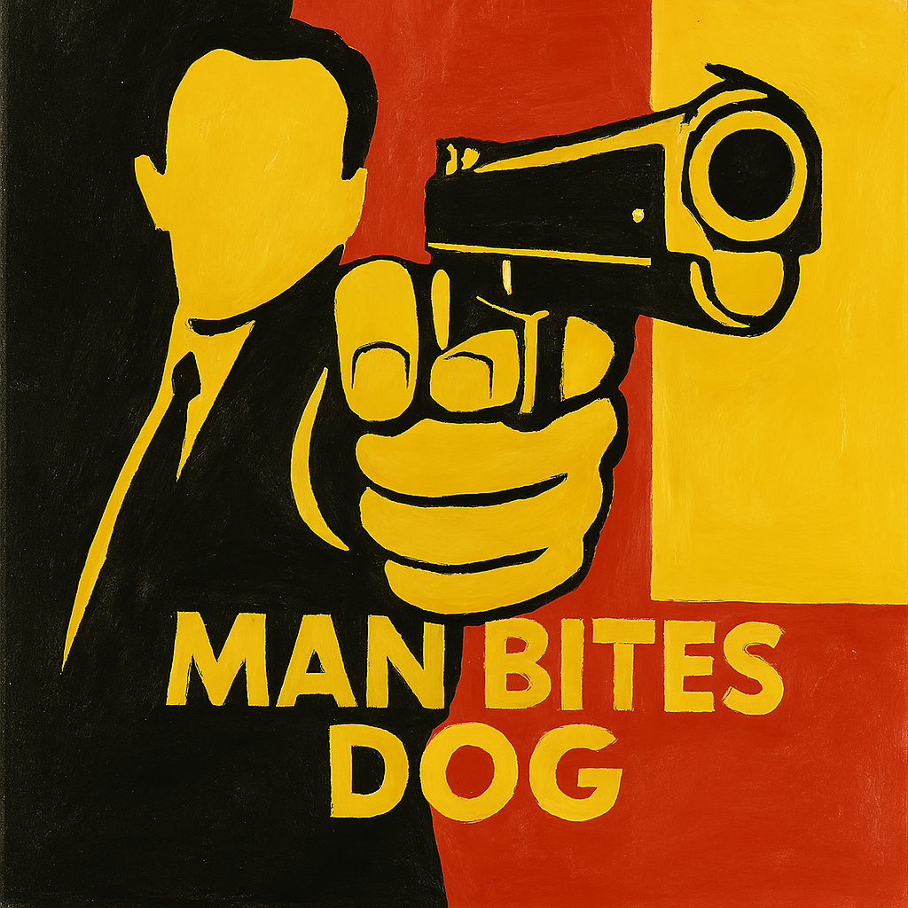

E001Belgium
A 1992 cult classic. This black comedy mockumentary, written, produced, and directed by Rémy Belvaux, follows a serial killer through the lens of a novice documentary crew. As the film progresses, the line between observer and participant dissolves, and the crew becomes complicit in the violence they document.
What begins as a seemingly detached exploration of a killer quickly turns into a sharp and uncomfortable critique of media fascination with violence. More than 30 years later, its commentary still feels disturbingly relevant.
Add your reflections, analysis, and discussion points here. Consider themes like media ethics, voyeurism, and how the film manipulates the viewer’s complicity.